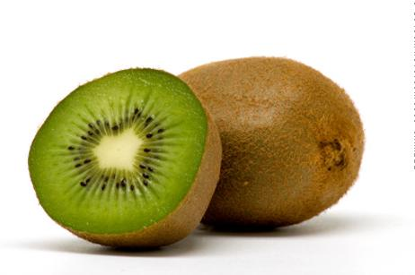

<h1 align="center" style="font-size:120">Kiwi</h1>
<p style="margin-top:-100" align="center">

<br>
Kiwi este fructul comestibil al plantelor Actinidia chinensis și Actinidia deliciosa din Asia. Denumirea chinezească este Yang Tao. Cunoscut original sub denumirea de „agrișe chinezești”.
</p>